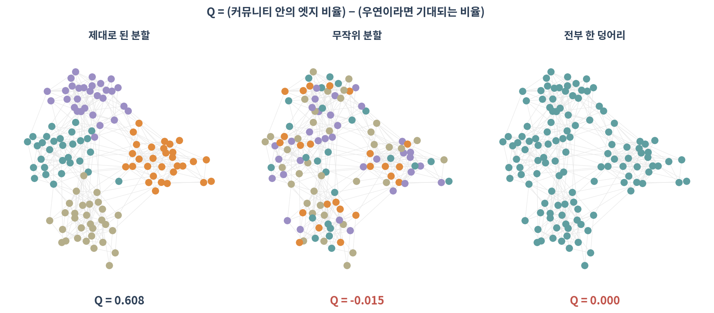
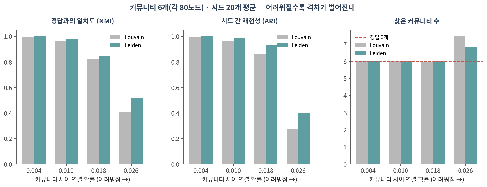
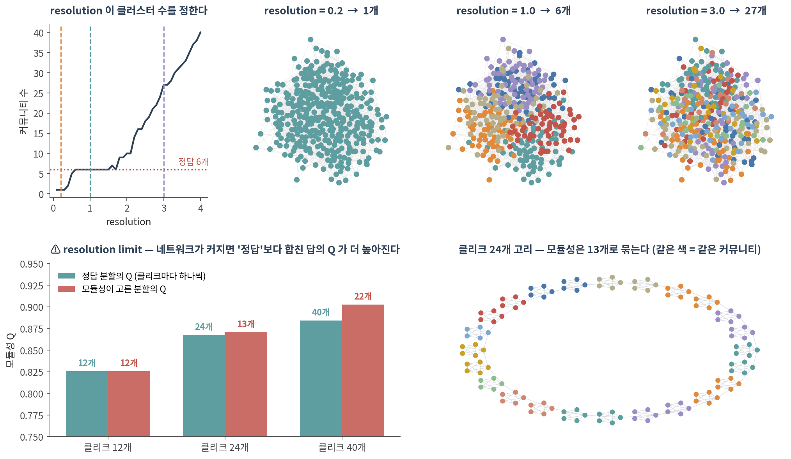
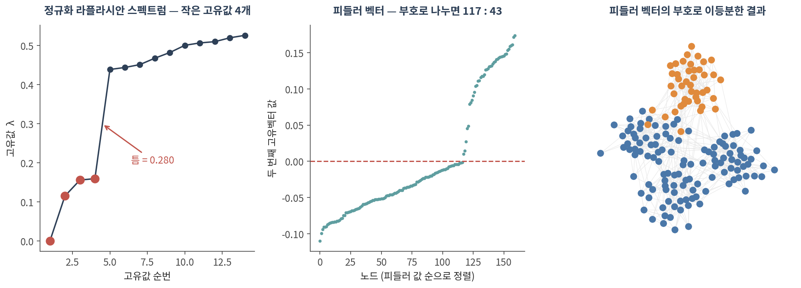

05. 커뮤니티와 모듈
이 챕터를 마치면 다음을 할 수 있습니다.
- 모듈성 Q가 무엇을 재는지, 왜 04의 null model과 같은 아이디어인지 말할 수 있다
- Girvan-Newman → Louvain → Leiden의 흐름과 Leiden을 쓰는 이유를 말할 수 있다
- ⚠️ resolution 파라미터가 하는 일과, 옳은 값이 없다는 것을 설명할 수 있다
- ⚠️ resolution limit이 알고리즘의 결함이 아니라 Q의 성질임을 예로 들 수 있다
- 라플라시안 고유값과 피들러 벡터로 그래프를 나누는 원리를 말할 수 있다
🤔 생각해볼 질문
sc.tl.leiden(adata, resolution=1.0)으로 클러스터 12개가 나왔습니다. 0.5로 바꾸면 8개가 됩니다. 어느 쪽이 맞나요?
1. 모듈성 Q 🧱
1) 정의
\[Q = (\text{커뮤니티 안에 있는 엣지 비율}) - (\text{우연이라면 기대되는 비율})\]
- 뒷항이 바로 null model입니다 — 차수를 보존한 채 엣지를 아무렇게나 이었을 때의 기대값(🔗 04 §2)
- 즉 Q는 “이 분할이 우연보다 얼마나 나은가”를 하나의 숫자로 요약한 것입니다

| 분할 | Q |
|---|---|
| 제대로 된 분할 | 0.608 |
| 무작위 분할 | −0.015 |
| 전부 한 덩어리 | 0.000 |
- 💡 전부 한 덩어리면 Q는 정확히 0입니다. 모든 엣지가 “안”에 있지만, 기대값도 똑같이 100%라서 상쇄됩니다
- 무작위 분할은 음수가 될 수 있습니다 — 우연보다 못하다는 뜻
2) Q를 최대화한다는 것
- 가능한 분할의 수는 노드 수에 대해 폭발적으로 늘어나므로 전부 시도할 수 없습니다
- 그래서 모든 커뮤니티 검출 알고리즘은 근사입니다 — 최적해를 찾았다는 보장이 없습니다
- ⚠️ 그래서 시드를 바꾸면 답이 달라집니다. 이 점이 §2와 §3의 출발점입니다
2. 알고리즘 계보 🧬
1) 네 가지
| 알고리즘 | 방식 | 지금 쓰나 |
|---|---|---|
| Girvan–Newman | 매개 중심성이 큰 엣지부터 제거 | ❌ 느림. 개념 설명용 |
| CNM (greedy) | Q가 가장 많이 오르는 쌍부터 병합 | 가끔 |
| Louvain | 지역 이동 → 커뮤니티를 노드로 축약 → 반복 | 여전히 널리 |
| Leiden | Louvain + 분할 정련 단계 추가 | ✅ 현재 표준 |
- Girvan–Newman은 03의 매개 중심성을 그대로 씁니다 — “모듈 사이를 잇는 엣지부터 끊자”
- Louvain은 빠르고 좋아서 10년 넘게 표준이었습니다
- Leiden(Traag et al. 2019)은 Louvain에 정련 단계를 넣어, Louvain이 만들 수 있는 내부가 끊긴 커뮤니티 문제를 막습니다
2) 정답을 아는 그래프에서 비교해보기
확률 블록 모형으로 커뮤니티 6개(각 80노드)를 만들고, 커뮤니티 사이 연결 확률만 올려가며 두 알고리즘을 시드 20개로 돌렸습니다.

| 커뮤니티 사이 연결 확률 | NMI (정답 일치) | ARI (재현성) | 찾은 커뮤니티 수 |
|---|---|---|---|
| 0.004 (쉬움) | 0.996 / 1.000 | 0.994 / 1.000 | 6.0 / 6.0 |
| 0.010 | 0.965 / 0.981 | 0.965 / 0.991 | 6.0 / 6.0 |
| 0.018 | 0.825 / 0.848 | 0.863 / 0.931 | 6.0 / 6.0 |
| 0.026 (어려움) | 0.409 / 0.516 | 0.274 / 0.400 | 7.5 / 6.8 |
(Louvain / Leiden 순. 정답은 6개)
- 구조가 뚜렷하면 둘 다 완벽합니다 — 쉬운 문제에서는 차이가 없습니다
- ⚠️ 흐릿해질수록 격차가 벌어집니다. 가장 어려운 조건에서 시드 간 재현성이 0.27 vs 0.40
- ⚠️ 그리고 Louvain은 정답보다 더 잘게 쪼갭니다(7.5개 vs 6.8개)
✅ 실무 지침: Leiden을 쓰고, 시드를 고정하고, 시드를 바꿔 한 번은 확인하세요. 답이 크게 달라진다면 그 클러스터링은 결과가 아닙니다.
python-louvain을 쓰지 마세요
python-louvain(import 이름community)은 최신 numpy·pandas 환경에서 빌드에 실패합니다- ✅ 대신 networkx 내장
networkx.algorithms.community.louvain_communities를 쓰세요 - ✅ Leiden은
leidenalg+python-igraph조합입니다. R에서는igraph::cluster_leiden()
⚠️ 참고: leidenalg의 기본 목적함수는 ModularityVertexPartition(모듈성)과 RBConfigurationVertexPartition(resolution 조절 가능)이 다릅니다. resolution을 쓰려면 후자여야 합니다. scanpy는 내부적으로 후자를 씁니다.
3. ⚠️ Resolution은 답이 없다

1) 클러스터 수는 파라미터가 정한다
정답이 6개인 그래프에서:
| resolution | 찾은 커뮤니티 수 |
|---|---|
| 0.2 | 1개 (전부 하나로) |
| 1.0 | 6개 ✅ |
| 3.0 | 27개 |
- ⚠️
sc.tl.leiden(adata, resolution=...)의 그 값입니다. 세포 클러스터 수는 여기서 정해집니다 - ⚠️ 통계적으로 옳은 값을 정하는 기준은 없습니다. 알고리즘은 시키는 대로 쪼갭니다
- 🔗 01 §3에서 kNN 그래프의 k가 그랬듯, 여기서도 숫자 하나가 결과를 만듭니다
✅ 대신 할 일:
- marker 유전자와 기존 지식으로 검증하세요 — 점수가 아니라
- 안정성을 보세요: resolution을 ±20% 흔들어도, 시드를 바꿔도 그 클러스터가 살아남는가
- 높은 resolution에서 새로 생긴 클러스터에 진짜 고유한 marker가 있는지 확인
- ✅ 쓴 값을 반드시 보고하세요
2) ⚠️ Resolution limit — 알고리즘의 잘못이 아니다
노드 5개짜리 완전 그래프(클리크)를 고리 모양으로 이어 붙입니다. 정답은 분명합니다 — 클리크마다 커뮤니티 하나.
| 클리크 수 | 정답 분할의 Q | 모듈성이 고른 분할 | 그 Q |
|---|---|---|---|
| 12개 | 0.8258 | 12개 ✅ | 0.8258 |
| 24개 | 0.8674 | 13개 | 0.8709 |
| 40개 | 0.8841 | 22개 | 0.9025 |
- ⚠️ 클리크 40개에서, 정답의 Q(0.8841)보다 이웃 클리크를 둘씩 합친 답의 Q(0.9025)가 더 높습니다
- 즉 알고리즘이 실수한 것이 아니라, Q라는 목적함수가 그 답을 더 좋아합니다
- 왜? Q의 기대값 항은 네트워크 전체 엣지 수로 나눕니다 → 네트워크가 커질수록 작은 모듈은 “우연히도 생길 만한 것”으로 취급됩니다
- 💡 같은 클리크인데 네트워크가 커졌다는 이유만으로 못 찾게 됩니다 (Fortunato & Barthélemy 2007)
✅ 대응:
- resolution을 올려 작은 모듈을 보이게 하거나
- 관심 영역만 잘라내 부분 네트워크에서 다시 클러스터링하거나
- Leiden의 CPM(Constant Potts Model)처럼 전체 크기에 의존하지 않는 목적함수를 쓰거나
3) 겹치는 커뮤니티
- 지금까지는 노드 하나가 커뮤니티 하나에만 속했습니다
- ⚠️ 그러나 단백질은 여러 복합체에, 유전자는 여러 경로에 동시에 속합니다
- Clique percolation, BigCLAM 등이 겹침을 허용합니다 — 개념만 알아두세요
4. 스펙트럴 방법 🎼
1) 라플라시안
- 라플라시안 \(L = D - A\) (D는 차수를 대각선에 놓은 행렬, A는 인접 행렬)
- 정규화 라플라시안은 차수 차이를 보정한 것 — 실제로는 이쪽을 씁니다

2) 고유값이 커뮤니티 수를 귀띔한다
가장 작은 고유값 8개: 0, 0.115, 0.156, 0.159, 0.439, 0.444, 0.452, 0.468
- 0에 가까운 고유값이 4개, 그 뒤에 0.28의 틈이 있습니다 → 커뮤니티 4개
- 💡 연결 요소가 k개면 고유값 0이 정확히 k개입니다. 커뮤니티는 “거의 끊어진” 상태이므로 고유값이 “거의 0”이 됩니다
- ⚠️ 실제 데이터에서 이 틈이 늘 뚜렷하지는 않습니다. 힌트이지 판정이 아닙니다
3) 피들러 벡터
- 두 번째로 작은 고유값의 고유벡터 = 피들러 벡터
- 그 부호로 노드를 나누면 그래프가 자연스러운 두 덩어리로 갈립니다
- 이것을 재귀적으로 적용하거나, 고유벡터 k개를 좌표로 삼아 k-means를 돌리는 것이 스펙트럴 클러스터링
💡 여기서 나온 고유벡터는 나중에 다시 등장합니다.
- 🔗 06 네트워크 전파도 같은 행렬을 씁니다
- 🔗 11 노드 임베딩이 사실은 이 행렬의 분해라는 것이 드러납니다
Colab에서 실행합니다. 설치는 90. Colab 환경 설정 참고.
import numpy as np, pandas as pd, networkx as nx
import igraph as ig, leidenalg as la
from networkx.algorithms.community import louvain_communities, modularity
from sklearn.metrics import adjusted_rand_score
G = nx.karate_club_graph() # 자기 네트워크로 바꿔도 그대로 돌아갑니다
G = G.subgraph(max(nx.connected_components(G), key=len)).copy()
g = ig.Graph.from_networkx(G)
# ── 1. Louvain 과 Leiden ─────────────────────────────────────────────
lv = louvain_communities(G, seed=0)
ld = la.find_partition(g, la.RBConfigurationVertexPartition,
resolution_parameter=1.0, seed=0, n_iterations=2)
print(f"Louvain {len(lv)}개 Q={modularity(G, lv):.4f}")
print(f"Leiden {len(ld)}개 Q={g.modularity(ld.membership):.4f}")
# ⚠️ karate club 처럼 작은 그래프(34노드)에서는 Leiden 의 Q 가 더 낮게 나오기도
# 합니다. 목적함수가 조금 다르고(RBConfiguration vs Modularity) 표본이 작아
# 생기는 차이입니다. §2 의 비교는 480노드·시드 20개로 한 것입니다.
# ── 2. ⚠️ resolution 훑기 — 클러스터 수가 어떻게 움직이는가 ──────────
rows = []
for r in np.arange(0.2, 3.01, 0.1):
p = la.find_partition(g, la.RBConfigurationVertexPartition,
resolution_parameter=float(r), seed=0, n_iterations=2)
rows.append({"resolution": round(r, 2), "n_clusters": len(p)})
pd.DataFrame(rows) # 평평한 구간(plateau)이 있으면 그쪽이 안정적입니다
# ── 3. ⚠️ 시드를 바꿔도 같은 답이 나오는가 ───────────────────────────
def memb(seed, r=1.0):
p = la.find_partition(g, la.RBConfigurationVertexPartition,
resolution_parameter=r, seed=seed, n_iterations=2)
return np.array(p.membership)
labs = [memb(s) for s in range(20)]
ari = [adjusted_rand_score(labs[i], labs[j])
for i in range(20) for j in range(i + 1, 20)]
print(f"시드 간 ARI 평균 {np.mean(ari):.3f} (1에 가까울수록 안정)")
# ── 4. 커뮤니티가 내부적으로 연결되어 있는지 점검 ────────────────────
for i, c in enumerate(lv):
nc = nx.number_connected_components(G.subgraph(c))
if nc > 1:
print(f"⚠️ 커뮤니티 {i}가 {nc}조각으로 끊어져 있음")
# ── 5. 스펙트럼으로 커뮤니티 수 가늠 ─────────────────────────────────
L = nx.normalized_laplacian_matrix(G).todense()
w, v = np.linalg.eigh(np.asarray(L))
print("작은 고유값 8개:", np.round(w[:8], 4))
print("연속한 고유값 사이 틈:", np.round(np.diff(w[:8]), 4)) # 가장 큰 틈 앞까지가 후보
fiedler = np.asarray(v[:, 1]).ravel()
split = (fiedler > 0).astype(int) # 피들러 부호로 이등분
print("이등분 크기:", np.bincount(split))확인할 것:
- ⚠️ resolution–클러스터 수 곡선에서 평평한 구간이 있는가. 있다면 그 구간이 상대적으로 안정적입니다
- ⚠️ 시드 간 ARI가 0.9 아래로 떨어지면 그 클러스터링은 보고할 만한 결과가 아닙니다 (karate club은 구조가 뚜렷해 1.000이 나옵니다)
- 단일세포라면
sc.tl.leiden(adata, resolution=r, random_state=s)로 같은 검사를 그대로 할 수 있습니다 - ✅ 공발현 모듈을 찾았다면 모듈별로 GO enrichment를 붙여 생물학적으로 말이 되는지 확인하세요
📝 요약
- Q = (안의 엣지 비율) − (우연이라면 기대값). 뒷항이 04의 null model입니다
- 전부 한 덩어리면 Q = 0, 무작위 분할은 음수가 될 수 있습니다
- ⚠️ 모든 커뮤니티 검출은 근사입니다. 시드를 바꾸면 답이 달라집니다
- ✅ Leiden이 현재 표준입니다. 구조가 흐릿할수록 Louvain과의 격차가 벌어집니다(재현성 0.27 vs 0.40)
- ⚠️ resolution이 클러스터 수를 정합니다. 옳은 값을 정하는 통계적 기준은 없습니다 → marker와 안정성으로 검증하고, 쓴 값을 보고하세요
- ⚠️ resolution limit — 클리크 40개 고리에서 정답 Q(0.884)보다 합친 답 Q(0.903)가 높습니다. 알고리즘의 결함이 아니라 Q의 성질입니다
- 라플라시안 고유값에서 0 근처 값의 개수와 그 뒤의 틈이 커뮤니티 수를 귀띔합니다
- 피들러 벡터의 부호로 그래프를 이등분할 수 있고, 이 고유벡터는 06과 11에서 다시 나옵니다
➕ 더 읽을거리
알고리즘
Girvan M, Newman MEJ. Community structure in social and biological networks. PNAS. 2002.
Blondel VD, Guillaume JL, Lambiotte R, Lefebvre E. Fast unfolding of communities in large networks. J Stat Mech. 2008. (Louvain)
Traag VA, Waltman L, van Eck NJ. From Louvain to Leiden: guaranteeing well-connected communities. Sci Rep. 2019.
Resolution limit
Fortunato S, Barthélemy M. Resolution limit in community detection. PNAS. 2007.
Fortunato S, Hric D. Community detection in networks: a user guide. Phys Rep. 2016.
스펙트럴 방법
von Luxburg U. A tutorial on spectral clustering. Stat Comput. 2007.
생물학 응용
Langfelder P, Horvath S. WGCNA: an R package for weighted correlation network analysis. BMC Bioinformatics. 2008.